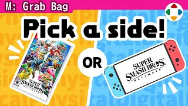
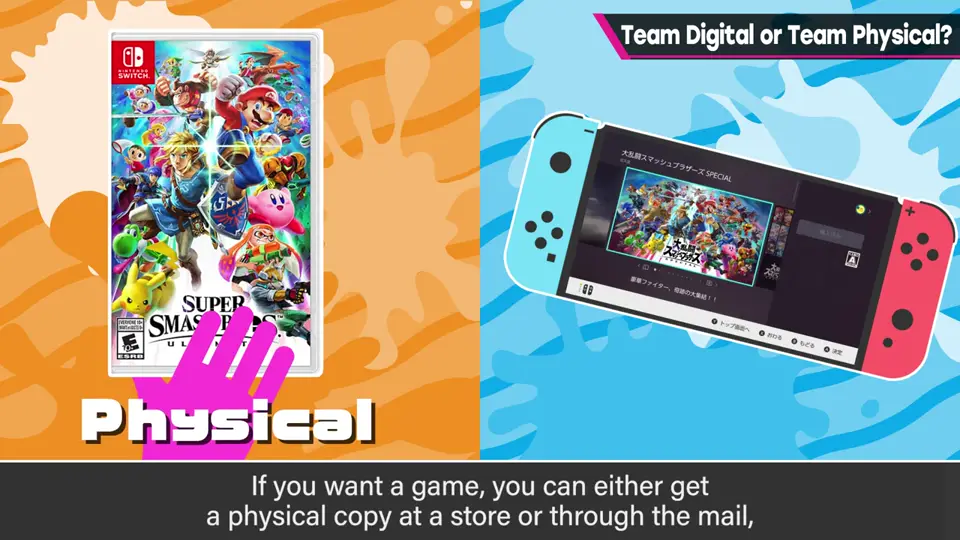
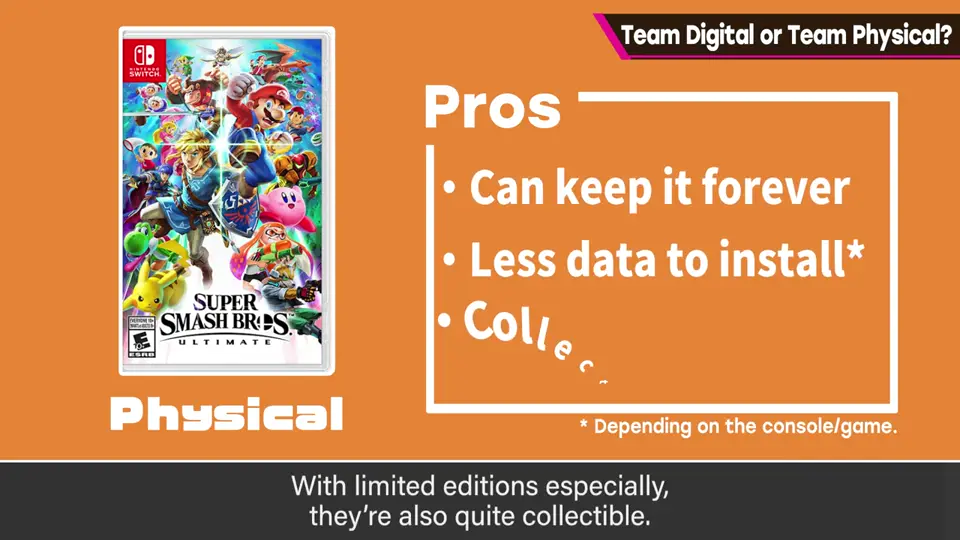
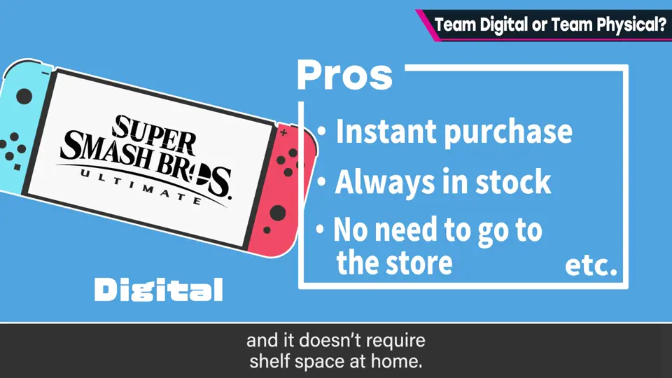
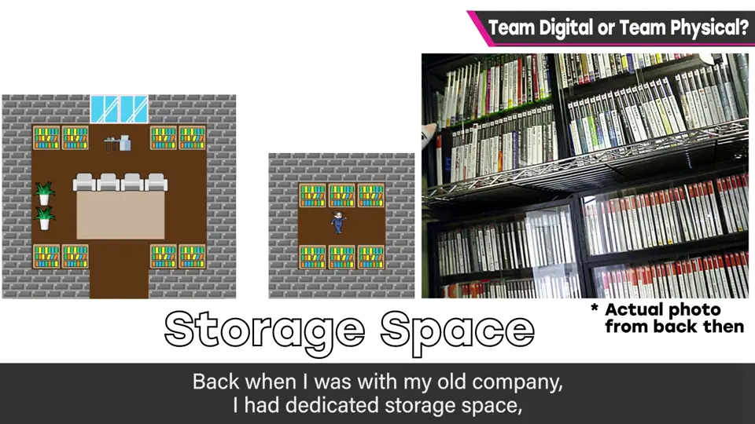
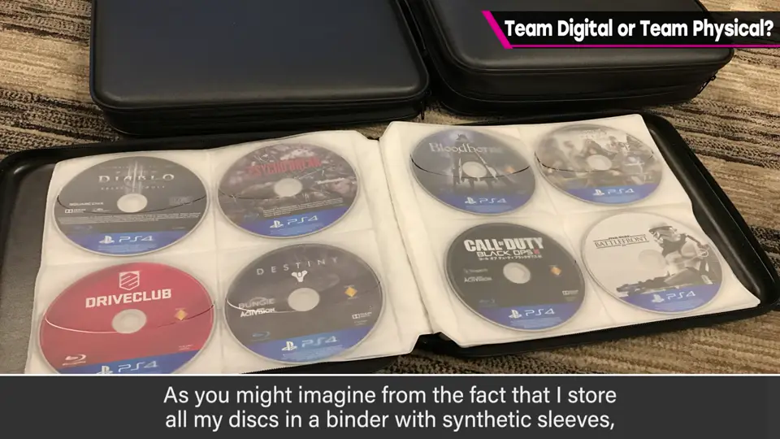
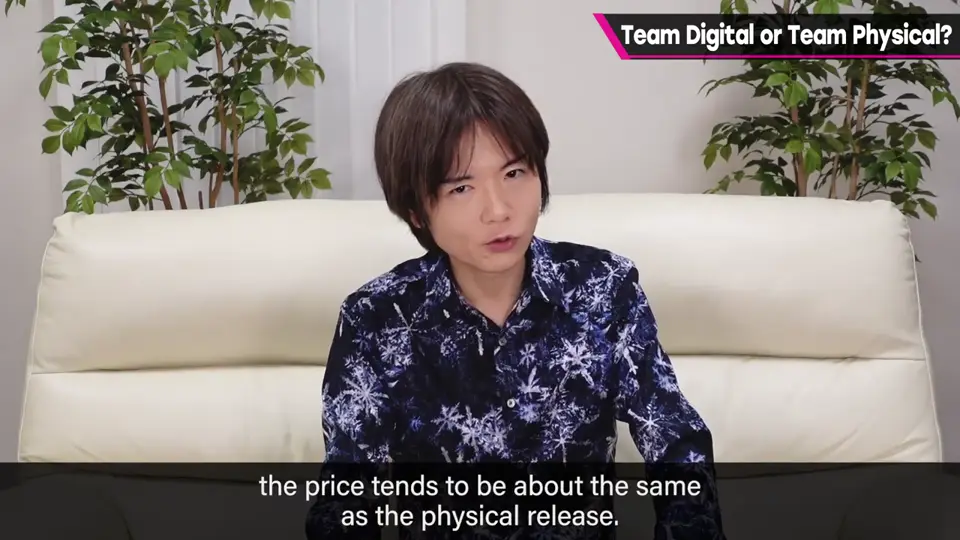
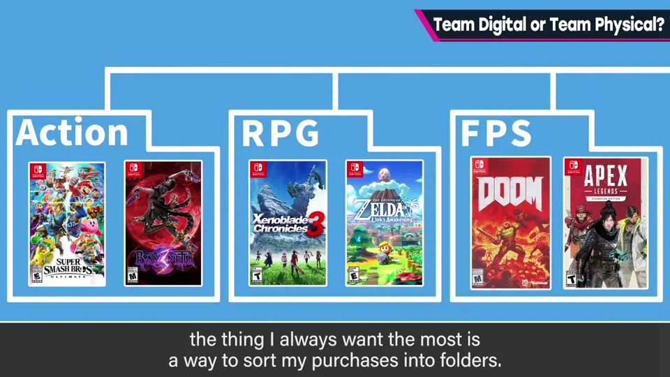
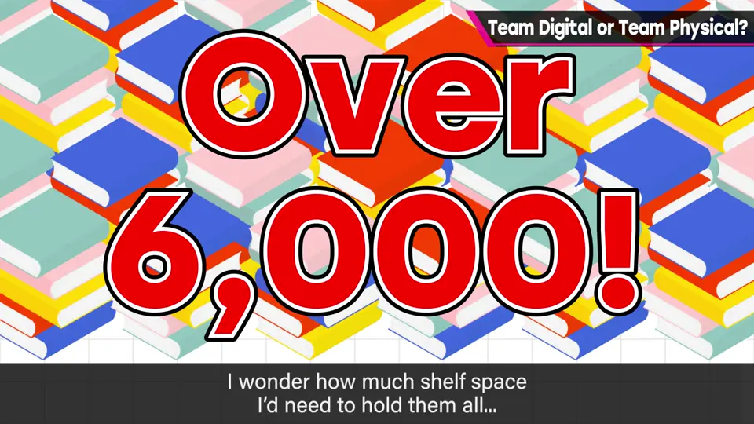

速览
主要买家用游戏时，你是实体派还是下载派？买软件可以在店头或网购买实体版，也可以买下载版，各有优缺点。实体版：作为实物留在手边、不占存储容量、有限定版、可以收藏，也不需要积分卡或信用卡。下载版：想到就能马上买，不会缺货断货，不用跑店，也不用等快递，不占地方。樱井则是断然的下载派：偶尔会收到别人送的实体版，但自己买的全部用下载。他买很多游戏，但对实物没什么执念，不是收藏家气质。以前在公司时还有收纳空间，独立后就很难确保空间了，所以软件尽量收纳得紧凑：从他把光盘收进无纺布文件夹就能想象，他不重视包装，而重视当时玩过这件事。不过家用游戏的下载版真贵啊：存储设备是自己准备的，也没有包装等附属品，价格却和实体版没多大差别——理由很多，这里省略，也许是市场的问题。无论哪种都有选择的理由，真的很难得；但作为玩大量游戏的人，他希望能按喜好好好分文件夹。另外他看书也用电子书，现在有6000 本以上，要是放进书架得占多少空间啊。总之，空间很重要。
1. 实体还是下载？ 0:04
买软件，可以在店头或网购买实体版，也可以买下载版。两者各有优缺点。

| 方式 | 优点 |
|---|---|
| 实体版 | 作为实物留在手边、不占容量、有限定版、可收藏、不需积分卡/信用卡 |
| 下载版 | 想买就买、不缺货、不用跑店、不用等快递、不占地方 |


2. 樱井：断然下载派 0:46
他买大量游戏，但对实物没什么执念，不是收藏家气质。
3. 空间问题 1:10
以前在公司时还有收纳空间，独立后就很难确保了，所以尽量把软件收得紧凑。


从他把光盘收进无纺布文件夹就能想象：他不重视包装，重视的是当时玩过这件事。
4. 对下载版的期望 1:39
但家用游戏下载版很贵：存储是自己准备的，也没有包装等附属品，价格却和实体版相差无几。理由很多，这里省略——也许是市场问题。


5. 电子书 6000 本 2:08
他看书也用电子书，现在有 6000 本以上——要放进书架得占多少空间？总之，空间很重要。

自测题
1. 实体版和下载版各有什么优点？
实体：实物可收藏、不占容量、限定版等；下载：随时买、不缺货、不用跑店、不占地方。 0:30
2. 樱井为何是下载派？
不是收藏家，不执着实物，独立后收纳空间不足，重视玩过而非包装。 1:10
3. 他对下载版有什么期望？
价格更合理（目前与实体相差无几），并能按喜好分文件夹。 2:05